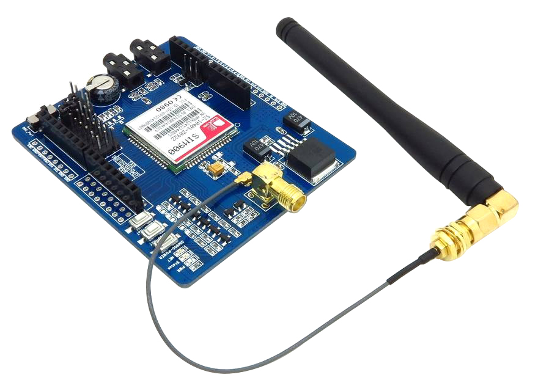

what is Inside DIA

Arduino with GSM Shield
is a tool for making computers that can sense and control more of the physical world than your desktop computer. It's an open-source physical computing platform based on a simple microcontroller board, and a development environment for writing software for the board.
Arduino can be used to develop interactive objects, taking inputs from a variety of switches or sensors, and controlling a variety of lights, motors, and other physical output.
Sensors
will sense your plant health and water levels.Soil/Dust Humidity/Water/Moisture Sensor
This is a simple water sensor can be used to detect soil moisture when the soil moisture deficit module outputs a high level, and vice versa output low. Use this sensor produced an automatic plant watering device, so that the plants in your garden without people to manage.
The DS18B20 digital thermometer provides 9-bit to 12-bit Celsius temperature measurements and has an alarm function with nonvolatile user-programmable upper and lower trigger points. The DS18B20 communicates over a 1-Wire® bus that by definition requires only one data line (and ground) for communication with a central microprocessor
The DS18B20 digital thermometer provides 9-bit to 12-bit Celsius temperature measurements and has an alarm function with nonvolatile user-programmable upper and lower trigger points. The DS18B20 communicates over a 1-Wire® bus that by definition requires only one data line (and ground) for communication with a central microprocessor